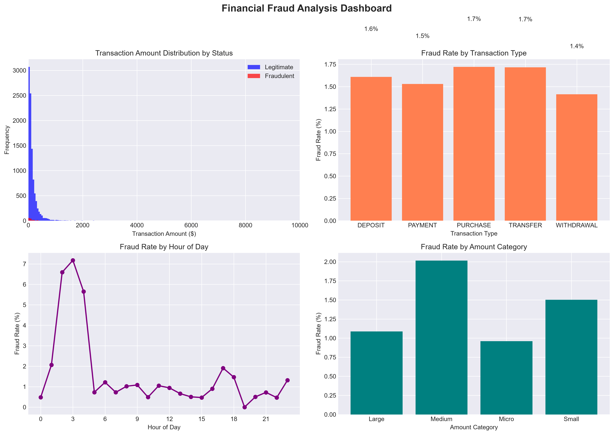

Data Analyst | SQL Specialist | Power BI Developer
I transform raw data into actionable insights using Python, SQL, Excel, and Power BI. Explore my projects in financial fraud detection and African mobile analytics.
Your University, Year
Microsoft PL-300: Power BI Data Analyst
SQL Advanced Certification
Generated synthetic transaction data using Python's Faker library to simulate realistic financial fraud scenarios. Analyzed patterns to identify fraud indicators including unusual transaction amounts, timing anomalies, and behavior patterns.

Simulated mobile usage data across 10 African countries to analyze trends in data consumption, call behavior, and revenue patterns. Generated realistic user profiles with country-specific demographics and provider preferences.